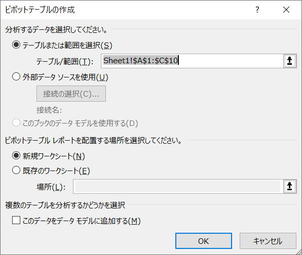

第93回.ピボットテーブル（PivotTable）

ピボットテーブルをマクロVBAで操作する事が良いかどうか、少々疑問な部分もあります。
しかし、ピボットテーブル（PivotTable）はエクセルでは必須機能になりますので、
少なくとも、ピボットテーブルの基本くらいは知っておくべきでしょう。
その後は文法解説は少なめにして、マクロ記録で作成されたVBAをからスタートし、
実践的に使い回せるビボットテーブルのVBAコードを作成しつつ説明をしていきます。
ピボットテーブル（PivotTable）を構成するオブジェクト群
ピボットテーブル関連のプロパティ、メソッド一覧
そして、決してこれで全てではありません>
さらに下位のオブジェクは他にもたくさんあります。
これらを覚えることはほぼ無理ですし、覚えることに意味はありません。
マクロの記録で自動記録されたVBAコードを参考にするのが最も早く簡単でしょう。
実践のVBAコードを読むことで、理解を深めて下さい。
A1セルからC10セルにデータが入っている表があるとします。
Excel2010のピボットテーブル（PivotTable）のマクロ記録
Sub
Macro1()
Sheets.Add
ActiveWorkbook.PivotCaches.Create(SourceType:=xlDatabase, SourceData:=
_
"Sheet1!R1C1:R10C3",
Version:=xlPivotTableVersion14).CreatePivotTable
_
TableDestination:="Sheet4!R3C1", TableName:="ﾋﾟﾎﾞｯﾄﾃｰﾌﾞﾙ1",
DefaultVersion
_
:=xlPivotTableVersion14
Sheets("Sheet4").Select
With
ActiveSheet.PivotTables("ﾋﾟﾎﾞｯﾄﾃｰﾌﾞﾙ1").PivotFields("担当")
.Orientation = xlRowField
.Position = 1
End With
With
ActiveSheet.PivotTables("ﾋﾟﾎﾞｯﾄﾃｰﾌﾞﾙ1").PivotFields("分類")
.Orientation =
xlColumnField
.Position = 1
End
With
ActiveSheet.PivotTables("ﾋﾟﾎﾞｯﾄﾃｰﾌﾞﾙ1").AddDataField
ActiveSheet.PivotTables( _
"ﾋﾟﾎﾞｯﾄﾃｰﾌﾞﾙ1").PivotFields("金額"), "合計 / 金額",
xlSum
End Sub
このまま使えなくはありませんが、
シート名やピボットテーブル名が固定になっていますので、
整理して、使いまわせるように変更します。
ActiveWorkbook.PivotCaches.Create(SourceType:=xlDatabase, SourceData:= _
"Sheet1!R1C1:R10C3", Version:=xlPivotTableVersion14).CreatePivotTable _
TableDestination:="Sheet4!R3C1", TableName:="ﾋﾟﾎﾞｯﾄﾃｰﾌﾞﾙ1", DefaultVersion _
:=xlPivotTableVersion14
この部分がわかりづらいと思います。
PivotCachesの作成と、CreatePivotTableでのピボットテーブルの作成を同時に行っている為です。
そこで、下のマクロでは、これを２段に分けて、
それぞれのオブジェクト変数に入れて使っています。
Sub Macro1()
Dim ws As Worksheet
Dim pvc As PivotCache
Dim
pvt As PivotTable
Set ws = Sheets.Add
Set pvc = ActiveWorkbook.PivotCaches.Create(SourceType:=xlDatabase, _
SourceData:="Sheet1!R1C1:R10C3",
_
Version:=xlPivotTableVersion14)
Set pvt = pvc.CreatePivotTable(TableDestination:=ws.Name & "!R3C1",
_
TableName:="ﾋﾟﾎﾞｯﾄﾃｰﾌﾞﾙ1",
_
DefaultVersion:=xlPivotTableVersion14)
With
pvt
With .PivotFields("担当")
.Orientation =
xlRowField
.Position = 1
End With
With
.PivotFields("分類")
.Orientation = xlColumnField
.Position =
1
End With
.AddDataField .PivotFields("金額"), "合計 / 金額",
xlSum
End With
End Sub
だいぶ理解しやすいのではないかと思います。
ブックにピボットキャッシュを作成しています。
ピボットキャッシュにピボットテーブルを作成しています。
Excel2003のピボットテーブル（PivotTable）のマクロ記録
Sub
Macro2()
Range("A1").Select
ActiveWorkbook.PivotCaches.Add(SourceType:=xlDatabase,
SourceData:= _
"Sheet1!R1C1:R10C3").CreatePivotTable
TableDestination:="", TableName:= _
"ﾋﾟﾎﾞｯﾄﾃｰﾌﾞﾙ1",
DefaultVersion:=xlPivotTableVersion10
ActiveSheet.PivotTableWizard
TableDestination:=ActiveSheet.Cells(3, 1)
With
ActiveSheet.PivotTables("ﾋﾟﾎﾞｯﾄﾃｰﾌﾞﾙ1").PivotFields("担当")
.Orientation =
xlRowField
.Position = 1
End With
With
ActiveSheet.PivotTables("ﾋﾟﾎﾞｯﾄﾃｰﾌﾞﾙ1").PivotFields("分類")
.Orientation =
xlColumnField
.Position = 1
End
With
ActiveSheet.PivotTables("ﾋﾟﾎﾞｯﾄﾃｰﾌﾞﾙ1").AddDataField
ActiveSheet.PivotTables( _
"ﾋﾟﾎﾞｯﾄﾃｰﾌﾞﾙ1").PivotFields("金額"), "合計 / 金額",
xlSum
End Sub
こちらの方が2010よりは理解しやすいかもしれません。
このまま使えなくはありませんが、
シート名やピボットテーブル名が固定になっていますので、
整理して、使いまわせるように変更します。
ActiveWorkbook.PivotCaches.Add(SourceType:=xlDatabase, SourceData:= _
"Sheet1!R1C1:R10C3").CreatePivotTable TableDestination:="", TableName:= _
"ﾋﾟﾎﾞｯﾄﾃｰﾌﾞﾙ1", DefaultVersion:=xlPivotTableVersion10
この部分がわかりづらいと思います。
PivotCachesの作成と、CreatePivotTableでのピボットテーブルの作成を同時に行っている為です。
それぞれのオブジェクト変数に入れて使っています。
Sub Macro2()
Dim ws As Worksheet
Dim pvc As PivotCache
Dim pvt As PivotTable
Set ws = Sheets.Add
Set pvc = ActiveWorkbook.PivotCaches.Add(SourceType:=xlDatabase, _
SourceData:="Sheet1!R1C1:R10C3")
Set pvt =
pvc.CreatePivotTable(TableDestination:=ws.Name & "!R3C1",
_
TableName:="ﾋﾟﾎﾞｯﾄﾃｰﾌﾞﾙ1",
_
DefaultVersion:=xlPivotTableVersion10)
With
pvt
With .PivotFields("担当")
.Orientation =
xlRowField
.Position = 1
End With
With
.PivotFields("分類")
.Orientation = xlColumnField
.Position =
1
End With
.AddDataField .PivotFields("金額"), "合計 / 金額",
xlSum
End With
End Sub
だいぶ理解しやすいのではないかと思います。
ブックにピボットキャッシュを作成しています。
ピボットキャッシュにピボットテーブルを作成しています。
Excel2010とExcel2003のピボットテーブルVBAの違いについて
結局、2010も2003もほぼ同じになりました。
大きく違いうのは、
PivotCaches.Create
と
PivotCaches.Add
この部分と、
DefaultVersion:=xlPivotTableVersion14
と
DefaultVersion:=xlPivotTableVersion10
非表示メンバーとなっても、Addメソッドは2010でも使用可能となっています。
さすがにもう2003は無くなってきましたので、2010の記述を使えば良いでしょう。
ピボットテーブル（PivotTable）のマクロVBA実践例
必要に応じて、その部分の処理のみVBAで行うようにすることをお勧めします。
With ActiveSheet
.PivotTables("ピボット1").ChangePivotCache ActiveWorkbook.PivotCaches.
_
Create(SourceType:=xlDatabase, SourceData:=.Range("A1").CurrentRegion)
End With
ピボットの更新
ActiveSheet.PivotTables("ピボット1").PivotCache.Refresh
同じテーマ「マクロVBA入門」の記事
第91回.条件付き書式（FormatCondition）
第126回.入力規則（Validation）
第92回.名前定義（Names）
第93回.ピボットテーブル（PivotTable）
第94回.コメント（Comment）
第95回.ハイパーリンク（Hyperlink）
第96回.グラフ（Chart）
第97回.図形オートシェイプ（Shape）
第136回.フォームコントロール
第137回.ActiveXコントロール
第98回.Findメソッド（Find,FindNext,FindPrevious）
新着記事NEW ・・・新着記事一覧を見る
VBA100本ノック 100本目：WEBから100本ノックのリストを取得｜VBA練習問題（3月3日）
VBA100本ノック 99本目：自動席替え（行列と前後左右が全て違うように）｜VBA練習問題（3月2日）
VBA100本ノック 98本目：席替えルールが守られているか確認｜VBA練習問題（3月1日）
VBA100本ノック 97本目：Accessデータを取得（グループ集計）｜VBA練習問題（2月27日）
VBA100本ノック 96本目：Accessデータを取得（マスタ結合&抽出）｜VBA練習問題（2月26日）
VBA100本ノック 95本目：図形のテキストを検索するフォーム作成｜VBA練習問題（2月24日）
VBA100本ノック 94本目：表範囲からHTMLのtableタグを作成｜VBA練習問題（2月23日）
VBA100本ノック 93本目：複数ブックを連結して再分割｜VBA練習問題（2月22日）
VBA100本ノック 92本目：セルの色を16進で返す関数｜VBA練習問題（2月20日）
VBA100本ノック 91本目：時間計算（残業時間の月間合計）｜VBA練習問題（2月19日）
アクセスランキング ・・・ ランキング一覧を見る
1.最終行の取得（End,Rows.Count）｜VBA入門
2.RangeとCellsの使い方｜VBA入門
3.変数宣言のDimとデータ型｜VBA入門
4.マクロって何？VBAって何？｜VBA入門
5.Range以外の指定方法（Cells,Rows,Columns）｜VBA入門
6.セルのコピー&値の貼り付け（PasteSpecial）｜VBA入門
7.繰り返し処理（For Next)｜VBA入門
8.セルに文字を入れるとは（Range,Value）｜VBA入門
9.マクロはどこに書くの（VBEの起動）｜VBA入門
10.とにかく書いてみよう（Sub,End Sub）｜VBA入門
このサイトがお役に立ちましたら「シェア」「Bookmark」をお願いいたします。
記述には細心の注意をしたつもりですが、
間違いやご指摘がありましたら、「お問い合わせ」からお知らせいただけると幸いです。
掲載のVBAコードは動作を保証するものではなく、あくまでVBA学習のサンプルとして掲載しています。
掲載のVBAコードは自己責任でご使用ください。万一データ破損等の損害が発生しても責任は負いません。